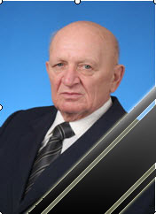

Меню
Абрамов Семен Семенович
Абрамаў Сямён Сямёнавіч (белорусский язык)
Abramov Semen Syamenavich (английский язык)
Годы жизни
7.11.1938 г. – 03.04.2017 г.
Место рождения
Республика Беларусь, Гомельская область, Тереховский район, д. Глыбоцкое
Республіка Беларусь, Гомельская вобласць, Церахоўскі раён, в. Глыбоцкае
Образование
1955–1960 г. Витебский ветеринарный институт, специальность «Ветеринария»,
квалификация «Ветеринарный врач»
1966–1969 гг. аспирантура при кафедре внутренних незаразных болезней, Витебский
ветеринарный институт
Трудовая деятельность
1960–1966 гг. заведующий ветеринарным участком, ветврач Слуцкой ветлечебницы,
директор Слуцкой горветстанции, Слуцкий район, Минская область
1969–1971 гг. ассистент кафедры патологии и терапии, Витебский ветеринарный
институт
1971–1988 гг. доцент кафедры патологии и терапии, Витебский ветеринарный
институт
1988–1990 гг. декан факультета ветеринарной медицины, профессор кафедры
внутренних незаразных болезней сельскохозяйственных животных, Витебский ветеринарный
институт
1995–2001 гг. первый проректор, профессор кафедры внутренних незаразных
болезней сельскохозяйственных животных, Витебская государственная академия ветеринарной
медицины
2006–2008 гг. заведующий кафедрой внутренних незаразных болезней
сельскохозяйственных животных, профессор, Витебская государственная академия ветеринарной
медицины
Ученая степень и звания
Кандидат ветеринарных наук (1969 г.)
Доцент (1971 г.)
Доктор ветеринарных наук (1986 г.)
Профессор (1988 г.)
Заслуженный работник образования Республики Беларусь (1999 г.)
Награды и премии
Орден Почета (2015 г.)
Почетные грамоты Минсельхозпрода, Министерства образования, ВАК РБ, Управления ветеринарии
Украины, Московской академии ветеринарной медицины, Белоцерковского аграрного университета
Область научной деятельности
Ветеринария
Научные интересы
Разработка в области незаразной патологии, физиотерапии, лечения и профилактики болезней
молодняка и патологий, протекающих с нарушением обмена веществ; исследования естественной
резистентности у крупного рогатого скота, влияние на нее физических и фармакологических средств.
На каких языках опубликованы работы
Русский, белорусский
Диссертация
Абрамов, С. С. Гидроаэроионизация в комплексной терапии бронхопневмонии телят : дис. …
канд. ветеринарных наук / С. С. Абрамов ; Витебский ветеринарный институт. – Витебск, 1968. –
185 с : ил.
Наиболее важные публикации
- Лечение животных при внутренней патологии с использованием препаратов отечественного производства : практическое руководстсво / С. С. Абрамов, А. П. Курдеко, А. А. Белко, Ю. К. Коваленок, А. А. Мацинович, В. В. Петров, В. Н. Иванов. – Витебск : УО ВГАВМ, 2005. – 199 с.
- Новое в патологии животных / А. И. Ятусевич, Н. Н. Андросик, С. С. Абрамов, В. В. Максимович. – Минск : Техноперспектива, 2008. – 403 с.
- Общая терапия животных : руководство для студентов факультетов
ветеринарной медицины, учащихся ветеринарных отделений ССУЗов и ветеринарных специалистов /
С. С. Абрамов, А. П. Курдеко, А. А. Белко, В. А. Самсонович, Ю. К. Коваленок, А. А.
Мацинович, В. Н. Иванов, М. П. Кучинский ; Витебская
государственная академия ветеринарной медицины ; рецензенты : М. П. Коваль, П. А. Красочко. – Витебск : УО ВГАВМ, 2005. – 188 с. : ил. - Перекисное окисление липидов и эндогенная интоксикация у животных (значение в патогенезе внутренних болезней животных, пути коррекции) : [монография] / С. С. Абрамов, А. А. Белко, А. А. Мацинович, А. П. Курдеко, Ю. К. Коваленок, А. В. Саватеев. – Витебск : УО ВГАВМ, 2007. – 208 с. : граф., табл., рис., фото. – Библиогр.: с. 193–208.
Биобиблиография
- Абрамаў Сямён Сямёнавич // Ветэрынарная энцыклапедыя : А – Я / рэд. А. І. Ятусевіч. – Мiнск : БелЭн, 1995. – С. 24.
- Абрамаў Сямён Сямёнавич // Беларуская энцыклапедыя : у 18 т. / рэд. Г. П. Пашкоў [i iнш.]. – Мiнск : БелЭн, 1996. – Т. 1 : А – Аршын. – С. 37.
- Абрамов Семен Семенович // Кто есть Кто в Республике Беларусь. Люди Дела : энциклопедия / ред. И. В. Чекалов. – Минск : Энциклопедикс, 1999. – С. 235.
- Абрамов Семен Семенович // Кто есть кто. Деловой мир СНГ. 2002. – Минск : Энциклопедикс, 2002. – Вып. 2. – С. 8.
- Абрамов Семен Семенович // Кто есть Кто в Республике Беларусь. Деловой мир СНГ = Who is Who in the Republic of Belarus. The business world of cis. / ред. И. В. Чекалов [и др.]. – Минск : Энциклопедикс, 2006. – Вып. 3. – С. 12.
- Абрамов Семен Семенович // Республика Беларусь : энциклопедия : в 6 т. / ред. Г. П. Пашков [и др.]. – Минск : Беларуская Энцыклапедыя, 2006. – Т. 2. А – Герань. – С. 8.
- К юбилею С. С. Абрамова [К 70-летию одного из ведущих ученых в области незаразной патологии и физиотерапии, заслуженного работника образования Республики Беларусь, д-ра ветеринарных наук, профессора] // Ветеринария. – 2008. – № 12. – С. 59–60.
- Абрамов Семен Семенович // Витебская ордена «Знак Почета» государственная академия ветеринарной медицины: история и современность (к 85-летию со дня основания) / ред. А. И. Ятусевич [и др.]. – Витебск : ВГАВМ, 2009. – С. 109–110.
- Абрамов Семен Семенович : автобиографический очерк доктора ветеринарных наук, профессора / Витебская государственная академия ветеринарной медицины. – Витебск : ВГАВМ, 2010. – 24 с. – Библиогр.: с. 5–23.
- Абрамов Семен Семенович // Ветеринарная энциклопедия : в 2 т. / С. С. Абрамов [и др.] ; ред. А. И. Ятусевич [и др.]. – Минск : Беларуская Энцыклапедыя iмя Петруся Броўкi, 2013. – Т. 1. А – К. – С. 7.
- Абрамов Семен Семенович // Витебская ордена «Знак Почета» государственная академия ветеринарной медицины: история и современность (к 90-летию со дня основания) / ред. А. И. Ятусевич [и др.]. – Витебск : ВГАВМ, 2014. – С. 130–131.
Работы Абрамова С. С. в репозитории УО ВГАВМ
1. Абрамов, С. С. Гидроаэроионизация в комплексной терапии бронхопневмонии телят : дис.
… канд. ветеринарных наук / С. С. Абрамов ; Витебский ветеринарный институт. –
Витебск, 1968. – 185 с : ил. – Библиогр.: с. 153–185.
2. Абрамов, С. С. Гидроаэроионизация при лечении бронхопневмонии телят / С. С. Абрамов, В.
И. Ганкович // Ветеринария. – 1968. – № 3. – С. 58–59.
3. Абрамов, С. С. Значение гидроаэроионизации в комплексной терапии бронхопневмонии телят /
С. С. Абрамов ; руководитель работы Ф. Ф. Порохов // Весцi Акадэмii навук БССР. Сер.
сельскагаспадарчых навук. – 1968. – № 4. – С. 106–108.
4. Абрамов, С. С. Комплексное лечение хронической формы бронхопневмоний телят / С. С.
Абрамов ; научный руководитель Ф. Ф. Порохов // Ветеринария. – 1968. – № 11. – С. 75–76.
5. Абрамов, С. С. Гидроаэроионизация в комплексной терапии бронхопневмонии телят : автореф.
дис. … канд. ветеринарных наук : 800 / С. С. Абрамов ; Витебский ветеринарный институт. –
Витебск, 1969. – 16 с.
6. Абрамов, С. С. О бронхопневмонии телят и ее комплексной терапии / С. С. Абрамов // Тезисы
докладов научно-производственной конференции по ветеринарии, 27–28 ноября 1969 г. /
Белорусский научно-исследовательский ветеринарный институт. – Минск, 1969. – С. 110–111.
7. Абрамов, С. С. Аэроионизационный режим помещений для молодняка крупного рогатого скота /
С. С Абрамов // Актуальные вопросы ветеринарии и зоотехнии : материалы
научно-производственной конференции за 1970 г. / Эстонская сельскохозяйственная академия,
Витебский ветеринарный институт. – Витебск, 1971. – С. 121–122.
8. Абрамов, С. С. Действие гидроаэроинов на микрофлору воздуха помещений / С. С. Абрамов, В.
М. Жавненко // Ветеринария. – 1971. – № 2. – С. 34–35.
9. Абрамов, С. С. Влияние подстилки на микроклимат помещений / С. С. Абрамов, А. Ф. Могиленко
// Ветеринария. – 1972. – № 3. – С. 23–24.
10. Абрамов, С. С. Сезонные изменения аэроионизационного режима в телятниках / С. С. Абрамов
// Ветеринария. – 1972. – № 5. – С. 20–21.
11. Порохов, Ф. Ф. К вопросу о применении аэроионизации в ветеринарии / Ф. Ф. Порохов, С. С.
Абрамов, В. И. Ганкович // Пути повышения продуктивности сельскохозяйственных животных и
птицы (действие физических агентов на организм животных) : сборник научных трудов / Одесский
сельскохозяйственный институт. – Одесса, 1972. – С. 506–508.
12. Абрамов, С. С. О влиянии аэроионов на микрофлору птичников / С. С. Абрамов, В. Жавненко // Птицеводство. – 1973. – № 12. – С. 43.
13. Некоторые итоги изучения незаразных заболеваний молодняка сельскохозяйственных животных в
БССР / Ф. Ф. Порохов, С. С. Абрамов, Н. В. Кубасов, И. Т. Иванеков, В. И. Ковзов, П. С.
Матюшев, В. А. Шалев, В. И. Ганкович // Профилактика и меры борьбы с болезнями крупного
рогатого скота и свиней : тезисы докладов научно-практической конференции, посвященной
50-летию со дня основания Витебского ветеринарного института имени Октябрьской революции,
20–22 ноября 1974 г. / Витебский ветеринарный институт. – Витебск, 1974. – С. 26–28.
14. Оценка методов диагностики травматического ретикулита / Ф. Ф. Порохов, Н. В. Кубасов, С.
С. Абрамов, В. В. Громова // Ветеринария. – 1974. – № 2. – С. 92–94.
15. Порохов, Ф. Ф. Повышение резистентности и профилактика респираторных болезней телят
ультрафиолетовым облучением / Ф. Ф. Порохов, С. С. Абрамов, В. И. Ганкович // Ветеринария. –
1975. – № 12. – С. 93–95.
16. Порохов, Ф. Ф. Профилактика и лечение диспепсии и бронхопневмонии у телят : методические
рекомендации для зооветспециалистов / Ф. Ф. Порохов, С. С. Абрамов, Е. М. Похолкин. –
Витебск, 1975. – 20 с.
17. Абрамаў, С. С. Уплыў ультрафіалетавага абпраменьвання на некаторыя бакі абмену рэчаваў у
арганізме цялят ва ўмовах прамысловага жывелагдоўчага комплексу / С. С. Абрамаў, М. Б.
Гурэвіч, С. А. Шчарбакова // Весці Акадэміі навук БССР. Сер. сельскагаспадарчых навук. –
Мінск, 1977. – № 4. – С. 95–101.
18. Абрамов, С. С. Влияние витамина В12 на резистентность организма телят / С. С. Абрамов,
В. В. Линник // Ветеринария. – 1977. – № 10 – С. 93–94.
19. Абрамов, С. С. Динамика естественной реактивности и биохимической картины крови крупного
рогатого скота в зимне-весенний период / С. С. Абрамов, В. И. Ганкович, Ф. Ф. Порохов //
Гигиена, кормление, разведение и генетика сельскохозяйственных животных : сборник научных
трудов / Ленинградский ветеринарный институт. – Ленинград, 1977. – Вып. 50. – С. 5–6.
20. Абрамов, С. С. Влияние аэроионизации на естественную резистентность организма телят / С.
С. Абрамов // Гигиена, кормление, разведение и генетика сельскохозяйственных животных :
сборник научных трудов / Ленинградский ветеринарный институт. – Ленинград, 1978. – Вып. 54.
– С. 5–7.
21. Абрамов, С. С. Действие ультрафиолетового облучения на телят / С. С. Абрамов //
Ветеринария. – 1978. – № 2. – С. 90–91.
22. Абрамов, С. С. Сравнительная характеристика различных методов определения аммиака в
животноводческих помещениях / С. С. Абрамов, С. С. Маковкин // Гигиена, кормление,
разведение и генетика сельскохозяйственных животных : сборник научных трудов / Ленинградский
ветеринарный институт. – Ленинград, 1978. – Вып. 54. – С. 8–10.
23. Соколов, Г. А. Ультрафиолетовое облучение в животноводстве / Г. А Соколов, С. С.
Абрамов. – Минск : Белорусский НИИ НТИ и технико-экономических исследований, 1978. – 23 с.
1979
24. Абрамов, С. С. Ультрафиолетовое облучение – эффективное средство профилактики незаразных болезней телят / С. С. Абрамов, В. И. Ганкович, Г. Е. Шпак, В. В. Линник // Молочное и мясное скотоводство. – 1979. – № 5. – С. 43.
25. Абрамаў, С. С. Дынамiка рэзiстэнтнасцi ў маладняку буйной рагатай жывёлы / С. С. Абрамаў,
I. М. Карпуць, С. В. Колiна // Весцi Акадэмii навук Беларускай ССР. Серыя сельскагаспадарчых
навук. – 1982. – № 3. – С. 92–97.
26. Абрамов, С. С. Физиопрофилактика бронхопневмонии у телят / С. С. Абрамов, Э. С.
Пигальцев, П. И. Соловьянов // Ветеринария. – 1982. – № 12. – С. 66–67.
27. Абрамаў, С. С. Уплыў ферментатэрапіі на імунабіялагічную рэактыўнасть цялят / С. С.
Абрамаў, І. М. Карпуць // Весці Акадэміі навук БССР. Сер. сельскагаспадарчых навук. – 1983.
– № 2. – С. 103–106.
28. Абрамов, С. С. Влияние отрицательных аэроионов на организм телят / С. С. Абрамов, В. И.
Ганкович // Ветеринария. – 1983. – № 5. – С. 56–57.
29. Абрамов, С. С. Ферменты для профилактики бронхопневмонии у телят / С. С. Абрамов, Ф. Ф.
Порохов // Ветеринария. – 1983. – № 3. – С. 58–59.
30. Абрамов, С. С. Комплексное использование аэроионизации, ультрафиолетового и
инфракрасного облучения при лечении бронхопневмонии телят / С. С. Абрамов, В. И. Ганкович,
Э. С. Пигальцев // Ветеринарная наука – производству : межведомственный тематический сборник
/ Белорусский научно-исследовательский институт экспериментальной ветеринарии. – Минск,
1983. – Вып. 21. – С. 116–119.
31. Абрамов, С. С. Лечение и профилактика бронхопневмонии молодняка крупного рогатого скота
: рекомендации для зооветспециалистов / С. С. Абрамов. – Минск, 1983. – 20 с.
32. Абрамов, С. С. Профилактика и лечение неспецифической бронхопневмонии телят / С. С.
Абрамов // Актуальные вопросы профилактики и борьбы с болезнями сельскохозяйственных
животных в специализированных хозяйствах и комплексах : тезисы докладов Республиканской
научно-производственной конференции, Витебск, 29–30 сентября 1983 г. / Белорусский
научно-исследовательский институт экспериментальной ветеринарии, Витебский ветеринарный
институт. – Минск, 1983. – С. 126–127.
33. Абрамов, С. С. Ферментотерапия бронхопневмонии телят / С. С Абрамов, Ф. Ф. Порохов //
Ветеринарная наука – производству : межведомственный тематический сборник / Белорусский
научно-исследовательский институт экспериментальной ветеринарии. – Минск, 1983. – Вып. 21. –
С. 120–123.
34. Абрамов, С. С. Физические и лекарственные методы профилактики и лечения бронхопневмонии у телят путем воздействия на естественную резистентность организма : автореф. дис. … доктора ветеринарных наук : 16.00.01 / С. С. Абрамов ; Казанский ветеринарный институт. – Казань, 1984. – 38 с. : Библиогр.: с. 36–38.
35. Андросик, Н. Н. Болезни дыхательной системы / Н. Н. Андросик, С. С Абрамов // Справочник
по болезням сельскохозяйственных животных / Н. А. Ковалев [и др.]. – Минск : Ураджай, 1985.
– С. 43–50.
36. Справочник по болезням сельскохозяйственных животных / Д. Д. Бутьянов, И. М. Карпуть, М.
В. Якубовский, С. С. Абрамов, П. Я. Конопелько, В. М. Лемеш, Ф. Ф. Порохов, В. М.
Воскобойников, Э. И. Веремей, М. А. Антюков, Т. Г. Никулин. – Минск : Ураджай, 1985. – 344
с.
37. Колосов, А. А. Новокаиновые блокады при бронхопневмонии телят / А. А. Колосов, С. С. Абрамов // Ветеринария. – 1986. – № 11. – С. 52.
38. Абрамов, С. С. Групповая терапия телят, больных подострой формой бронхопневмонии, с
помощью комплекса физиотерапевтических факторов / С. С Абрамов, В. И. Ганкович // Вопросы
групповой профилактики заболеваний животных и птиц : тезисы докладов Межреспубликанской
конференции (Кайшядорис, 23 апреля 1987 г.) / Литовский научно-исследовательский институт
животноводства и ветеринарии, Западное отделение Всесоюзной академии сельскохозяйственных
наук им. В. И. Ленина. – Вильнюс : ГАПК ЛитССР, 1987. – С. 5–7.
39. Абрамов, С. С. Методические указания по проведению практических занятий на ветеринарном
факультете по разделу «Физиотерапия и физиопрофилактика» / С. С. Абрамов, И. Т. Иваненков. –
Витебск, 1987. – 20 с.
40. Абрамов, С. С. Влияние комплексного, ультрафиолетового, инфракрасного облучений и
аэроионизации на интенсивность обменных процессов в организме телят / С. С Абрамов //
Профилактика незаразных болезней у коров : тезисы докладов научно-практической конференции,
Тарту, 21–22 июня 1988 г. / Эстонский НИИ животноводства и ветеринарии им. А. Э. Мельдера. –
Таллин, 1988. – С. 3–4.
41. Абрамов, С. С. Использование стимулирующих препаратов при бронхопневмонии телят / С. С.
Абрамов, Т. А. Радомская, Т. Н. Агеева // Ветеринария.– 1988. – № 2. – С. 58–59.
42. Методические указания по диагностике, профилактике и лечению респираторных болезней
телят / С. М. Сулейманов, М. И. Немченко, С. С. Абрамов [и др.] ; Всесоюзный
научно-исследовательский институт незаразных болезней животных. – Воронеж : ВНИИНБ, 1988. –
22 с.
43. Порохов, Ф. Ф. Пути профилактики обмена веществ у высокопродуктивных коров при
интенсивном их использовании на промышленных комплексах : рекомендации для слушателей ФПК,
студентов и руководителей хозяйств / Ф. Ф. Порохов, И. М. Карпуть, С. С. Абрамов. – Витебск,
1988. – 50 с.
44. Абрамов, С. С. Болезни дыхательной системы (ринит, ларингит, бронхиты, бронхопневмония,
крупозная пневмония, плеврит) / С. С. Абрамов // Незаразные болезни молодняка / И. М.
Карпуть [и др.]. – Минск : Ураджай, 1989. – С. 76–97.
45. Абрамов, С. С. Влияние отрицательных аэроионов на обменные процессы в организме телят /
С. С. Абрамов // Ветеринария. – 1989. – № 7. – С. 23–25.
46. Абрамов, С. С. Методические указания по определению естественной резистентности и путях
ее повышения у молодняка сельскохозяйственных животных / С. С. Абрамов, А. Ф. Могиленко, А.
И. Ятусевич. – Витебск, 1989. – 40 с. : табл.
47. Абрамов, С. С. Программа и методические указания по учебной практике для студентов 3-го
курса ветеринарного факультета / С. С. Абрамов, А. Ф. Могиленко. – Витебск, 1989. – 6
с.
48. Заготовка кормов с использованием биологических консервантов / М. Н. Богдановская, В. В.
Гребенко, Л. И. Стефанович, И. М. Карпуть, С. С. Абрамов, Н. В. Редько, Г. И. Ковалева //
Интенсификация производства в отраслях агропромышленного комплекса на основе использования
методов биотехнологии : тезисы докладов научной конференции, г. Минск, 21–22 февраля 1989 г.
/ Всесоюзная сельскохозяйственная академия им. В. И. Ленина, Госагропром Белорусской
Советской Социалистической Республики, Белорусское республиканское правление НТО сельского
хозяйства. – Минск, 1989. – С. 28–29.
49. Незаразные болезни молодняка / И. М. Карпуть, Ф. Ф. Порохов, С. С. Абрамов, В. А.
Телепнев, И. Г. Арестов, М. С. Жаков, И. Т. Иваненков, В. И. Ковзов, Л. М. Пивовар, Л. П.
Вель. – Минск : Ураджай, 1989. – 240 с.
50. Новые препараты / И. Г. Арестов, С. С. Абрамов, А. Ф. Могиленко, В. И. Чалов // Сельское
хозяйство Белоруссии. – 1989. – № 4. – С. 16.
51. Абрамов, С. С. Влияние ультрафиолетового и инфракрасного облучений на обмен веществ у
телят / С. С. Абрамов // Ветеринария. – 1990. – № 4. – С. 23–25.
52. Абрамов, С. С. Использование лучистой энергии и аэроионизации в профилактике болезней
телят / С. С. Абрамов // Актуальные проблемы ветеринарной и зоотехнической науки в
интенсификации животноводства : материалы конференции, посвященной 70-летию МВА (24–26
ноября 1989 г.) / Московская ветеринарная академия. – Москва, 1990. – С. 128–129.
53. Абрамов, С. С. Профилактика респираторных болезней телят в условиях интенсивного
животноводства / С. С Абрамов, И. Г. Арестов // Фармакология и токсикология новых
лекарственных средств и кормовых добавок : сборник научных трудов / Ленинградский
ветеринарный институт. – Ленинград, 1990. – Вып. 101. – С. 7–8.
54. Абрамов, С. С. Эффективность использования средств, стимулирующих естественную
резистентность, в комплексе лечебно-профилактических мероприятий при бронхопневмонии телят /
С. С Абрамов // Профилактика и меры борьбы с болезнями молодняка сельскохозяйственных
животных : тезисы докладов республиканской научно-производственной конференции (г. Витебск,
12–13 сентября 1990 г.) / Н. Н. Андросик [и др.] ; Белорусский научно-исследовательский
институт экспериментальной ветеринарии, Витебский ветеринарный институт. – Минск, 1990. – С.
113–114.
55. Андросик, Н. Н. Болезни дыхательной системы / Н. Н. Андросик, С. С Абрамов // Справочник
по болезням сельскохозяйственных животных / Д. Д. Бутьянов [и др.]. – 2–е изд., перераб. и
доп. – Минск : Ураджай, 1990. – С. 30–36.
56. Качество силоса из трав с бактериальным препаратом / В. В. Гребенко, Ж. Н. Богдановская,
Л. А. Стефанович, И. М. Карпуть, С. С. Абрамов, В. К. Назаров, С. И. Новицкий, Ю. М.
Ванинская // Кормовые культуры. – 1990. – № 5. – С. 39–41.
57. Профилактика незаразных болезней молодняка / С. С. Абрамов, И. Г. Арестов, И. М.
Карпуть, Е. А. Ломова, Ф. Ф. Порохов. – Москва : Агропромиздат, 1990. – 175 с. – (Библиотека
практического ветеринарного врача).
58. Справочник по болезням сельскохозяйственных животных / Д. Д. Бутьянов, И. М. Карпуть, М.
В. Якубовский, С. С. Абрамов, П. Я. Конопелько, В. М. Лемеш, Ф. Ф. Порохов, В. М.
Воскобойников, Э. И. Веремей, М. А. Антюков, Т. Г. Никулин. – 2-е изд., перераб. и доп. –
Минск : Ураджай, 1990. – 352 с.
59. Абрамов, С. С. Влияние ферментных препаратов на обменные процессы, иммунную реактивность
и заболеваемость телят / С. С Абрамов, А. Г. Арестов // Профилактика и лечение болезней
молодняка сельскохозяйственных животных : тезисы докладов Всесоюзной научно-технической
конференции, 9–10 октября 1991 г., г. Воронеж / Всесоюзный научно-исследовательский
ветеринарный институт патологии, фармакологии и терапии. – Москва, 1991. – С. ?
60. Абрамов, С. С. Диетические препараты для профилактики диспепсии у новорожденных телят /
С. С. Абрамов, А. А. Белко // Повышение продуктивности сельскохозяйственных животных и
совершенствование мер борьбы с болезнями в условиях интенсивного ведения животноводства и
создания фермерских хозяйств : тезисы докладов на Всесоюзной конференции, 17–22 сентября
1991 г., посвященной 140-летию Харьковского зооветеринарного института им. Н. М. Борисенко /
Харьковский государственный университет ; ред. М. Е. Павлов. – Харьков, 1991. – C. 170
–171.
61. Абрамов, С. С. Ферментные препараты в профилактике и комплексной терапии телят при
диарее / С. С. Абрамов, И. С. Шевченко // Ветеринария. – 1991. – № 9. – С. 49–51.
62. Абрамов, С. С. Использование лучистой энергии и аэроионизации в профилактике болезней
телят / С. С Абрамов // Использование физических и биологических факторов в ветеринарии и
животноводстве : материалы Всесоюзной научной конференции (г. Витебск, 11–12 сентября 1991
г.) / Витебский ветеринарный институт, Московская ветеринарная академия ; ред. В. П. Шишков.
– Москва, 1992. – С. 3.
63. Актуальные проблемы экологического образования и воспитания студентов в Витебском
ветеринарном институте в процессе преподавания специальных дисциплин / А. Ф. Могиленко, С.
С. Абрамов, Г. А. Соколов, В. В. Максимович // Актуальные проблемы экологического
образования и воспитания : (тезисы докладов республиканской научно-практической конференции,
Минск, 17–19 ноября 1992 года) / Государственный комитет Республики Беларусь по экологии,
Белорусское педагогическое общество. – Минск, 1992. – С. 60–61.
64. Ятусевіч А. І. Тлумачальны слоунiк-даведнiк па ветэрынарыi i заатэхнii / А. І. Ятусевiч,
С. С. Абрамаў, В. М. Лемеш . – Мінск : Ураджай, 1992. – 318 с.
65. Абрамов, С. С. Некоторые показатели естественной резистентности здоровых и больных
анемией ягнят / С. С Абрамов, А. А. Белко // Ученые записки / Витебский ветеринарный
институт. – Витебск, 1993. – Т. 30. – С. 5–8.
66. Абрамов, С. С. Отравление кроликов нитратами / С. С Абрамов // Хозяин. – 1993. – № 8. –
С. 11.
67. Абрамов, С. С. Профилактика анемии у ягнят / С. С Абрамов, А. А. Белко // Технология
получения и выращивания здорового молодняка сельскохозяйственных животных и рыбопосадочного
материала : тезисы докладов Республиканской научно-практической конференции / Академия
аграрных наук Республики Беларусь, Витебский ветеринарный институт. – Минск, 1993. – С.
188–189.
68. Выращивание и болезни собак : учебник для студентов высших сельскохозяйственных учебных
заведений по спец. “Ветеринарная медицина” / Н. Ф. Карасев, С. С. Абрамов, А. И.
Ятусевич, В. А. Кирпиченок, В. М. Лакисов, А. С. Терешенков, В. Ф. Литвинов, А. Ф.
Могиленко. – Минск : Ураджай, 1993. – 302 с.
69. К вопросу об использовании “Белоруссита” с целью профилактики
желудочно-кишечных заболеваний новорожденных телят и минеральной недостаточности у взрослых
животных / С. С Абрамов, Ф. Ф. Порохов, Р. Г. Иксанов, И. С. Шевченко, Л. Л. Жук, Г. Б. Жук,
И. М. Карпуть // Ученые записки / Витебский ветеринарный институт. – Витебск, 1993. – Т. 30
– С. 10–12.
70. Могиленко, А. Ф. Использование моделирования производственных ситуаций, деловых игр и
системного анализа при изучении клинических дисциплин / А. Ф. Могиленко, С. С Абрамов //
Новые формы и методы обучения студентов : учебно-методическая конференция / Костромской
сельскохозяйственный институт. – Кострома, 1993. – С. 86–87.
71. Абрамов, С. С. Комплексная патогенетическая терапия телят, больных острой
бронхопневмонией / С. С Абрамов // Ученые записки / Витебская государственная академия
ветеринарной медицины. – Витебск, 1994. – Т. 31. – С. 11–14.
72. Справочник по болезням кроликов, нутрий и ондатр / Н. Ф. Карасев, В. Ф. Литвинов, В. А
Кирпиченок, С. С. Абрамов, А. И. Ятусевич. – Минск : Ураджай, 1994. – 120 с. : ил.
73. Абрамов, С. С. Состояние естественной резистентности и иммунной реактивности больных
анемией ягнят / С. С Абрамов, А. А. Белко // Ученые записки / Витебская государственная
академия ветеринарной медицины. – Витебск, 1995. – Т. 32. – С. 3–4.
74. Абрамов, С. С. Эффективность использования фитотерапии в комплексном лечении телят при
некоторых незаразных болезнях / С. С. Абрамов, А. А. Дроздовский, С. О. Асетник // Итоги и
перспективы научных исследований по проблемам патологии животных и разработке средств и
методов терапии и профилактики : материалы координационного совещания, г. Воронеж, 10–12
октября 1995 г.: 25-летию научной деятельности института посвящается / Всероссийский
научно-исследовательский ветеринарный институт патологии, фармакологии и терапии. – Воронеж,
1995. – С. 276–278.
75. Ветэрынарная энцыклапедыя / ред. А. I. Ятусевiч. – Мiнск : БелЭн, 1995. – 444 с. – Аўт.
таксама : Абрамаў С. С.
76. Дифференциальная диагностика болезней животных : учебное пособие для слушателей
факультетов повышения квалификации и студентов вузов по специальности “Ветеринарная
медицина” / А. И. Ятусевич, С. С. Абрамов, Н. С. Безбородкин, В. И. Науменков, В. С.
Каминский, М. С. Жаков, М. К. Дятлов. – Минск : Ураджай, 1995. – 383 с. – Библиогр. : с.
378–379.
77. Методические рекомендации по применению новокаиновых блокад при внутренних незаразных
болезнях / Витебская государственная академия ветеринарной медицины ; сост. С. С. Абрамов,
И. С. Шевченко, В. С. Каминский. – Витебск : УО ВГАВМ, 1995 – 11 с.
78. Абрамов, С. С. Использование раствора натрия гипохлорита в комплексной терапии диспепсии
новорожденных телят / С. С Абрамов, И. Н. Дубина // Ученые записки / Витебская
государственная академия ветеринарной медицины. – Витебск, 1996. – Т. 33. – С. 3–4.
79. Абрамов, С. С. Использование раствора натрия гипохлорита в комплексной терапии диспепсии
у новорожденных телят / С. С Абрамов, И. Н. Дубина // Ветеринарные и зооинженерные проблемы
животноводства : материалы I Международной научно-практической конференции (г. Витебск,
28–29 ноября 1996 г.) / Витебская государственная академия ветеринарной медицины. – Витебск,
1996. – С. 15–16.
80. Могиленко, А. Ф. Перспективы, достоинства и недостатки интегрированной, непрерывной
подготовки по зооветеринарным специальностям / А. Ф. Могиленко, С. С Абрамов // Ученые
записки / Витебская государственная академия ветеринарной медицины. – Витебск, 1996. – Т.
33. – С. 197.
81. Результаты контроля за уровнем остаточных знаний студентов / А. Ф. Могиленко, С. С.
Абрамов, Н. С. Безбородкин, В. В. Пилько // Ветеринарные и зооинженерные проблемы
животноводства : материалы I Международной научно-практической конференции, (г. Витебск,
28–29 ноября 1996 г.) / Витебская государственная академия ветеринарной медицины. – Витебск,
1996. – С. 13.
82. Абрамов, С. С. Влияние натрия гипохлорита на некоторые биохимические показатели сыворотки
крови телят, больных диспепсией / С. С. Абрамов, Ю. К. Коваленок, И. Н. Фетисов //
Ветеринарные и зооинженерные проблемы в животноводстве и научно-методическое обеспечение
учебного процесса : материалы II Международной научно-практической конференции, г. Витебск,
23–25 сентября 1997 г. / Витебская государственная академия ветеринарной медицины. – Минск,
1997. – С. 58–60.
83. Абрамов, С. С. Гипохлорит натрия как патогенетическое средство при лечении телят,
больных диспепсией / С. С. Абрамов, Ю. К. Коваленок // Весцi акадэмii аграрных навук
Рэспублiкi Беларусь. – 1997. – № 3. – С. 58–60.
84. Абрамов, С. С. Диспансеризация – основа профилактики незаразных болезней :
учебно-методическое пособие для студентов факультета ветеринарной медицины, учащихся
ветеринарных отделений техникумов, слушателей ФПК / С. С. Абрамов, А. Ф. Могиленко, А. А.
Белко ; Министерство сельского хозяйства и продовольствия Республики Беларусь,
Учебно-методический центр. – Минск, 1997. – 32 с. – Библиогр. : с. 28.
85. Абрамов, С. С. Методическое обеспечение учебного процесса в академии / С. С Абрамов, А.
А. Гласкович, Е. Б. Криворучко // Ветеринарные и зооинженерные проблемы в животноводстве и
научно-методическое обеспечение учебного процесса : материалы II Международной
научно-практической конференции, г. Витебск, 23–25 сентября 1997 г. / Витебская
государственная академия ветеринарной медицины. – Минск, 1997. – С. 10–12.
86. Абрамов, С. С. НИРС – основной этап в подготовке научно-педагогических кадров / С. С
Абрамов, И. М. Карпуть, Ю. Г. Зелютков // Опыт и проблемы организации
научно-исследовательской работы студентов : тезисы докладов Международной
научно-практической конференции и X республиканского научно-методического семинара, (15–17
октября 1997г., Минск). – Минск : Белорусский государственный университет, 1997. – С.
86–87.
87. Абрамов, С. С. Патогенетическая терапия при диспепсии телят / С. С. Абрамов, Ю. К.
Коваленок // Экологические проблемы патологии, фармакологии и терапии животных : материалы
Международного координационного совещания, 19–23 мая 1997 г. / Российская академия
сельскохозяйственных наук. – Воронеж, 1997. – С. 283–284.
88. Методы введения лекарственных веществ : учебно-методическое пособие для студентов
факультета ветеринарной медицины, учащихся ветеринарных техникумов, слушателей ФПК) /
Витебская государственная академия ветеринарной медицины, Кафедра внутренних незаразных
болезней ; сост. С. С. Абрамов, А. А. Белко. – Витебск : ВГАВМ, 1997. – 46 с. : ил. –
Библиогр.: с. 46.
89. Могиленко, А. Ф. Повышение профессиональной и педагогической квалификации преподавателей
– важнейшее условие высокой квалификации выпускаемых специалистов / А. Ф. Могиленко, С. С
Абрамов // Учебно-методическое обеспечение подготовки кадров рабочих профессий и
специалистов по непрерывной интегрированной системе аграрного образования : материалы II
Международной научно-практической конференции / Белорусский государственный
аграрно-технический университет. – Минск, 1997. – С. 211–213.
90. Абрамов, С. С. Влияние натрия гипохлорита на белковый состав сыворотки крови телят,
больных диспепсией / С. С. Абрамов, Ю. К. Коваленок, Д. Д. Морозов // Ученые записки :
сборник научных трудов / Витебская академия ветеринарной медицины. – Витебск, 1998. – Т. 34.
– С. 22–24.
91. Абрамов, С. С. Влияние натрия гипохлорита на клеточные и гуморальные показатели
естественной резистентности организма телят, больных диспепсией / С. С. Абрамов, Ю. К.
Коваленок // Весці акадэміі аграрных навук Рэспублікі Беларусь. – 1998. – № 2. – С.
84–87.
92. Абрамов, С. С. Влияние натрия гипохлорита на некоторые показатели липидного обмена у
телят, больных диспепсией / С. С. Абрамов, Ю. К. Ковалёнок // Вiснник Бiлоцеркiвського
державного аграрного унiверситету : навукові статті II Міжнародной конференціі, (м. Біла
Церква, 4-5 червеня 1998 р.) “Проблемі неінфекційной патологіі тварин” / Бiлоцеркiвській
державній аграрній унiверситет. – Бiла Церква, 1998. – Вип. 5, ч. 1. – С. 45–47.
93. Абрамов, С. С. Изменение оксидантно-прооксидантной системы в организме телят, больных
диспепсией, и в процессе их комплексного лечения / С. С. Абрамов, Ю. К. Коваленок, Л. Н.
Кирпиченок // НТИ и рынок. – 1998. – № 6. – С. 38–40.
94. Абрамов, С. С. Лечение телят, больных диспепсией с использованием натрия гипохлорита /
С. С. Абрамов, Ю. К. Коваленок // НТИ и рынок. – 1998. – № 1. – С. 33–35.
95. Абрамов, С. С. Повышение профессионального мастерства преподавателей – основа
качественного учебного процесса / С. С. Абрамов, М. К. Дятлов // Информационный бюллетень
УМЦ Минсельхозпрода РБ. – Минск, 1998. – С. 27–29.
96. Абрамов, С. С. Применение натрия гипохлорита при лечении телят, больных диспепсией / С.
С. Абрамов, Ю. К. Коваленок // Конкурентоспособное производство продукции животноводства в
Республике Беларусь : сборник работ Международной научно-производственной конференции
Жодино, 23–24 апреля, 1998 года / Академия аграрных наук Республики Беларусь, Белорусский
научно-исследовательский институт животноводства. – Жодино, 1998. – С. 229–230.
97. Абрамов, С. С. Эффективность применения натрия гипохлорита при лечении телят, больных
диспепсией / С. С. Абрамов, Ю. К. Коваленок // Материалы научно-производственной
конференции, посвященной 190-летию высшего ветеринарного образования в России и 100-летию
ветеринарной науки (ветеринарной лаборатории в Петербурге) Санкт-Петербург / Российская
академия сельскохозяйственных наук, Санкт-Петербургская государственная академия
ветеринарной медицины. – Санкт-Петербург, 1998. – Ч. 1. – С. 11.
98. Влияние растворов натрия гипохлорита на морфологическое состояние брюшины и органов
брюшной полости у морских свинок / С. С. Абрамов, Ф. Д. Гуков, А. А. Белко, А. А. Мацинович
// Материалы научно-производственной конференции, посвященной 190-летию высшего
ветеринарного образования в России и 100-летию ветеринарной науки (ветеринарной лаборатории
в Петербурге) Санкт-Петербурге / Российская академия сельскохозяйственных наук,
Санкт-Петербургская государственная академия ветеринарной медицины. – Санкт-Петербург, 1998.
– Ч. 1. – С. 9.
99. Изучение на лабораторных животных возможности внутрибрюшинного и энтерального применения
раствора натрия гипохлорита / С. С Абрамов, Ф. Д. Гуков, А. А. Белко, А. А. Мацинович //
Проблемы патологии, санитарии и бесплодия в животноводстве : материалы Международной
научно-практической конференции, посвященной 100-летию со дня рождения академиков АН
Беларуси Х. С. Горегляда и М. К. Юсковца, Минск, 10–11 декабря 1998 г. / Академия аграрных
наук Республики Беларусь, Белорусский научно-исследовательский институт экспериментальной
ветеринарии, Витебская государственная академия ветеринарной медицины. – Минск, 1998. – С.
172–173.
100. Терапевтическая эффективность внутрибрюшинного применения растворов натрия гипохлорита
при диспепсии телят / С. С. Абрамов, А. А. Белко, А. А. Мацинович, Д. Д. Морозов //
Материалы научно-производственной конференции, посвященной 190-летию высшего ветеринарного
образования в России и 100-летию ветеринарной науки (ветеринарной лаборатории в Петербурге)
Санкт-Петербурге / Российская академия сельскохозяйственных наук, Санкт-Петербургская
государственная академия ветеринарной медицины. – Санкт-Петербург, 1998. – Ч. 1. – С.
10.
101. Ятусевич, А. И. Использование интегрированной системы подготовки специалистов / А. И.
Ятусевич, С. С. Абрамов, Н. С. Безбородкин // Тенденции и пути развития аграрного
образования в XXI веке : материалы Международной научно-практической конференции (Горки,
9–10 декабря 1998 г.) / Белорусская сельскохозяйственная академия. – Горки, 1998. – С.
152–154.
102. Абрамов, С. С. Некоторые средства патогенетической терапии при лечении поросят, больных
токсической гепатодистрофией / С. С. Абрамов, В. В. Великанов // Проблемы
сельскохозяйственного производства в изменяющихся экономических и экологических условиях :
материалы международной научно-практической конференции, посвященной 25–летию Смоленского
сельскохозяйственного института. – Смоленск, 1999. – Ч. 4 : Общая биология и ветеринарная
медицина. – С. 150–152.
103. Мацинович, А. А. Парентеральное применение натрия гипохлорита для профилактики
диспепсии у телят / А. А. Мацинович, С. С. Абрамов // Ученые записки : сборник научных
трудов / Витебская государственная академия ветеринарной медицины. – Витебск, 1999. – Т. 35,
ч. 1. – С. 200–202.
104. Петров, В. В. Патогенетическая терапия при гастроэнтеритах у поросят / В. В. Петров, С.
С. Абрамов // Проблемы сельскохозяйственного производства в изменяющихся экономических и
экологических условиях : материалы Международной научно-практической конференции,
посвященной 25-летию Смоленского сельскохозяйственного института. – Смоленск, 1999. – Ч. 4 :
Общая биология и ветеринарная медицина. – С. 137–139.
105. Эффективность сорбента СВ-1 в комплексной терапии животных при заболевании органов
пищеварения / С. С. Абрамов, А. А. Белко, В. В. Великанов, А. А. Мацинович // Животноводство
Беларуси. – 1999. – № 3(4). – С. 21–22.
106. Ятусевич, А. И. Педагогические кадры учебных заведений – основа качественной подготовки
руководителей и специалистов АПК / А. И. Ятусевич, С. С. Абрамов, М. К. Дятлов //
Профессиональное образование на рубеже тысячелетий: непрерывность и интеграция – состояние,
проблемы и перспективы развития : тезисы III Международной научно-практической конференции /
Учебно-методический центр, Белорусский аграрный технический университет. – Минск, 1999. – С.
22–24.
107. Абрамов, С. С. Влияние натрия гипохлорита на нормализацию биохимических показателей
крови поросят, больных гастроэнтеритом / С. С. Абрамов, В. В. Петров // Незаразные болезни
животных : материалы Международной научной конференции, посвященной 70-летию образования
зооинженерного факультета, Казань, 30–31 мая 2000 г. / Казанская государственная академия
ветеринарной медицины им. Н. Э. Баумана. – Казань, 2000. – С. 60–62.
108. Абрамов, С. С. Неспецифическая бронхопневмония у молодняка крупного рогатого скота / С.
С. Абрамов // Ветеринарная газета. – 2000. – № 21 – С. 3.
109. Абрамов, С. С. Особенности возникновения и развития диспепсии телят, обусловленной
пренатальным недоразвитием / С. С Абрамов, А. А. Мацинович // Ученые записки / Витебская
государственная академия ветеринарной медицины. – Витебск, 2000. – Т. 36, ч. 2. – С.
3–6.
110. Абрамов, С. С. Справочник по содержанию и болезням мелких и декоративных животных / С.
С. Абрамов, А. И. Ятусевич, В. П. Ятусевич. – Минск : Амалфея, 2000. – 272 с. : ил. –
Библиогр.: с. 26.
111. Абрамов, С. С. Эффективность гипохлорита натрия и энтеросорбента СВ-1 в терапии
поросят, больных токсической гепатодистрофией / С. С. Абрамов, В. В. Великанов // Незаразные
болезни животных : материалы Международной научной конференции, посвященной 70-летию
образования зооинженерного факультета, Казань, 30–31 мая 2000 г. / Казанская государственная
академия ветеринарной медицины им. Н. Э. Баумана. – Казань, 2000. – С. 57–59.
112. Абрамов, С. С. Эффективность применения энтеросгеля и гипохлорита натрия в терапии
телят, больных гастроэнтеритом / С. С Абрамов, Д. Д. Морозов // Ученые записки / Витебская
государственная академия ветеринарной медицины. – Витебск, 2000. – Т. 36, ч. 2. – С.
6–9.
113. Великанов, В. В. Натрия гипохлорит и энтеросорбент СВ-1 при токсической гепатодистрофии
поросят / В. В. Великанов, С. С. Абрамов // Ветеринария. – 2000. – № 12. – С. 45–47.
114. Влияние гипохлорита натрия на биохимические показатели крови и морфологию некоторых
органов поросят, больных гастроэнтеритом и токсической гепатодистрофией / С. С. Абрамов, Ф.
Д. Гуков, В. В. Великанов, В. В. Петров // Современные проблемы развития свиноводства :
материалы 7-ой Международной научно-производственной конференции (г. Жодино, 23–24 августа
2000г.). – Жодино, 2000. – С. 137–139.
115. Влияние гипохлорита натрия на состояние здоровых поросят и доброкачественность свинины
/ С. С. Абрамов, П. И. Похомов, В. В. Великанов, В. В. Петров // Международный аграрный
журнал. – 2000. – № 7. – С. 37–39.
116. Ранняя диагностика и прогнозирование диспепсии телят / С. С. Абрамов, А. А. Мацинович,
Г. Ф. Макаревич, А. А. Белко // Незаразные болезни животных : материалы Международной
научной конференции, посвященной 70-летию образования зооинженерного факультета, Казань,
30–31 мая 2000 г. / Казанская государственная академия ветеринарной медицины им. Н. Э.
Баумана. – Казань, 2000. – С. 59–60.
117. Справочник по болезням пушных плотоядных зверей / В. Ф. Литвинов, Н. Ф. Карасев, С. С.
Абрамов, С. С. Липницкий ; Белорусский государственный технологический университет,
Витебская государственная академия ветеринарной медицины, Белорусский
научно-исследовательский институт экспериментальной ветеринарии. – Минск, 2000. – 216 с.
118. Абрамов, С. С. Изучение курса эндокринологии студентами факультета ветеринарной медицины
с непрерывной интегрированной системой обучения / С. С. Абрамов, А. А. Белко, С. С. Шевченко
// Непрерывная интегрированная система аграрного образования: опыт, проблемы, алгоритмы
действий : материалы Республиканской научно-практической конференции, г. Горки, 18–20 апреля
2001 г. / Белорусская государственная сельскохозяйственная академия. – Горки, 2001. – С.
6–8.
119. Абрамов, С. С. К вопросу этиологии остеодистрофии у крупного рогатого скота в условиях
Лиозненского района / С. С. Абрамов, В. Н. Иванов // Международный аграрный журнал. – 2001.
– № 3. – С. 35–38.
120. Великанов, В. В. Влияние натрия гипохлорита и энтеросорбента СВ-1 на белковый состав
сыворотки крови и уровень показателей естественной резистентности поросят, больных
токсической гепатодистрофией / В. В. Великанов, С. С. Абрамов // Ветеринарная медицина
Беларуси. – 2001. – № 3. – С. 18–20.
121. Коваленок, Ю. К. Формирование у будущих врачей ветеринарной медицины готовности к
самообразованию / Ю. К. Коваленок, С. С. Абрамов // Исследования молодых ученых в решении
проблем животноводства : материалы Международной научно-практической конференции молодых
ученых и преподавателей сельскохозяйственных учебных заведений и научно-исследовательских
учреждений (г. Витебск, 22–23 мая 2001 года) / Витебская государственная академия
ветеринарной медицины. – Витебск, 2001. – С. 111–112.
122. Морозов, Д. Д. Применение адсорбента энтеросгель для терапии больных гастроэнтеритом
телят / Д. Д. Морозов, С. С. Абрамов // Ветеринарная медицина Беларуси. – 2001. – № 2. – С.
31–32.
123. Морозов, Д. Д. Сравнительная эффективность энтеросгеля и гипохлорита натрия при лечении
телят, больных гастроэнтеритом / Д. Д. Морозов, С. С. Абрамов // Весцi акадэмii аграрных
навук Рэспублiкi Беларусь. – 2001. – № 4. – С. 85–88.
124. Новокаиновые блокады, применяемые в ветеринарной терапии : учебно-методическое пособие
для студентов факультета ветеринарной медицины, ветеринарных специалистов и слушателей ФПК /
С. С. Абрамов, А. А. Белко, Ю. К. Коваленок, А. А. Мацинович ; Учебно-методический центр. –
Минск, 2001. – 23 с. : ил. – Библиогр.:с. 22.
125. Применение метода непрямой электрохимической детоксикации при желудочно-кишечных
болезнях телят и поросят : учебно-методическое пособие для студентов факультета ветеринарной
медицины, ветеринарных специалистов и слушателей ФПК / С. С. Абрамов, А. А. Белко, Ю. К.
Коваленок, А. А. Мацинович, В. В. Великанов, В. В. Петров, Д. Д. Морозов ; Витебская
государственная академия ветеринарной медицины. – Витебск : УО ВГАВМ, 2001. – 31 с. –
Библиогр.: с.29–31.
126. Ранняя диагностика и прогнозирование диспепсии телят / С. С. Абрамов, А. А. Мацинович,
Г. Ф. Макаревич, А. А. Белко // Незаразные болезни животных : материалы Международной
научной конференции, посвященной 70-летию образования зооинженерного факультета, Казань,
30–31 мая 2000 г. / Казанская государственная академия ветеринарной медицины им. Н. Э.
Баумана. – Казань, 2000. – С. 59–60.
127. Петров, В. В. Влияние гипохлорита натрия на показатели функционального состояния печени
при гастроэнтеритах поросят / В. В. Петров, С. С. Абрамов // Ветеринарная медицина Беларуси.
– 2002. – № 3. – С. 18–20.
128. Петров, В. В. Влияние гипохлорита натрия на функцию печени при гастроэнтерите поросят /
В. В. Петров, С. С. Абрамов // Ветеринария. – 2002. – № 3. – С. 38–41.
129. Справочник по разведению и болезням лошадей / А. И. Ятусевич, С. С. Абрамов, А. А.
Лазовский, В. К. Гусаков, К. Д. Валюшкин, И. М. Карпуть, В. А. Кирпиченок, Д. Д. Бутьянов,
В. П. Ятусевич, М. А. Горбуков, В. И. Чаврытко, И. С. Шевченко, Э. А. Солонеко, А. А.
Мацинович, В. М. Лакисов, В. М. Золотов, В. В. Петрукович, С. И. Стасюкевич ; ред. А. И.
Ятусевич. – Москва : Реал-А, 2002. – 320 с. : ил.
130. Абрамов, С. С. Использование интраферра-100 в комплексном лечении телят, больных
абомазоэнтеритом / С. С. Абрамов, С. В. Засинец // Ветеринарная медицина Беларуси. – 2003. –
№ 2. – С. 27–28.
131. Лапина, В. А. Применение средств эфферентной терапии в комплексном лечении поросят,
больных токсической гепатодистрофией / В. А. Лапина, С. С. Абрамов, В. В. Великанов //
Ветеринарная медицина Беларуси. – 2003. – № 1. – С. 24–25.
132. Абрамов, С. С. Латентная железодефицитная анемия у телят / С. С. Абрамов, С. В. Засинец
// Ветеринария. – 2004. – № 6. – С. 43–45.
133. Абрамов, С. С. Лекарственные растения при патологии сердечно-сосудистой, дыхательной и
пищеварительной систем / С. С. Абрамов, А. И. Ятусевич // Ветеринарная медицина Беларуси. –
2004. – № 6. – С. 29–31.
134. Лапина, В. А. Терапевтическая и экономическая эффективность способа лечения поросят,
больных токсической гепатодистрофией, с использованием энтеросорбента СВ-1 / В. А. Лапина,
С. С. Абрамов, В. В. Великанов // Ученые записки : сборник научных трудов по материалам
Международной научно-практической конференции “Актуальные проблемы ветеринарной
медицины и зоотехнии”, посвященной 80-летию основания УО ВГАВМ 4–5 ноября 2004 года
Витебск / Витебская государственная академия ветеринарной медицины. – Витебск, 2004. – Т.
40, ч. 1. – С. 98–99.
135. Абрамов, С. С. Заместительная терапия / С. С. Абрамов // Общая терапия животных :
руководство для студентов факультетов ветеринарной медицины, учащихся ветеринарных отделений
ССУЗов и ветеринарных специалистов / С. С. Абрамов, А. П. Курдеко, А. А. Белко, В. А.
Самсонович, Ю. К. Коваленок, А. А. Мацинович, В. Н. Иванов, М. П. Кучинский ; Витебская
государственная академия ветеринарной медицины ; рецензенты : М. П. Коваль, П. А. Красочко.
– Витебск : УО ВГАВМ, 2005. – С. 43–51.
136. Абрамов, С. С. К вопросу лечения телят, больных абомазоэнтеритом / С. С. Абрамов, В. И.
Мельничук // Ученые записки учреждения образования «Витебская государственная академия
ветеринарной медицины» : научно-практический журнал. – Витебск : УО ВГАВМ, 2005. – Т. 41,
вып. 2, ч. 2. – С. 6–7.
137. Абрамов, С. С. Новое в патогенезе абомазоэнтерита телят / С. С. Абрамов, Д. Д. Морозов,
С. В. Засинец // Международный вестник ветеринарии. – 2005. – № 2. – С. 51–54.
138. Лечение животных при внутренней патологии с использованием препаратов отечественного
производства : практическое руководство / С. С. Абрамов, А. П. Курдеко, А. А. Белко, Ю. К.
Коваленок, А. А. Мацинович, В. В. Петров, В. Н. Иванов. – Витебск : УО ВГАВМ, 2005. – 199
с.
139. Общая терапия животных : руководство для студентов факультетов ветеринарной медицины,
учащихся ветеринарных отделений ССУЗов и ветеринарных специалистов / С. С. Абрамов, А. П.
Курдеко, А. А. Белко, В. А. Самсонович, Ю. К. Коваленок, А. А. Мацинович, В. Н. Иванов, М.
П. Кучинский ; Витебская государственная академия ветеринарной медицины ; рецензенты : М. П.
Коваль, П. А. Красочко. – Витебск : УО ВГАВМ, 2005. – 188 с. : ил.
140. Организационно-технологические и санитарно-гигиенические мероприятия на
реконструируемых молочных фермах : методические рекомендации / Н. А. Попков, И. В. Карсека,
Т. В. Сергиеня, В. И. Шляхтунов, В. И. Смунев, В. А. Медведский, А. П. Курдеко, С. С
Абрамов, В. Н. Минаков, И. В. Егорова, А. В. Карась, А. А. Белко, В. М. Золотов, М. Б.
Шалак, А. И. Партной, В. Н. Тимашенко, А. Ф. Трофимов, А. А. Музака, А. С. Курак, И.
А.Ковалевский, Е. Л. Белоусов, М. А. Муравьева, М. А. Пучка, П. А. Дергач ; Витебская
государственная академия ветеринарной медицины, Институт животноводства НАН Беларуси. –
Витебск : УО ВГАВМ, 2005. – 59 с.
141. Практическое руководство по терапевтической технике / С. С. Абрамов, А. П. Курдеко, А.
А. Белко, Ю. К. Коваленок, А. А. Мацинович, В. Н. Иванов ; рец.: М. П. Коваль, Г. А. Соколов
; Министерство сельского хозяйства и продовольствия Республики Беларусь, Витебская
государственная академия ветеринарной медицины. – Витебск : УО ВГАВМ, 2005. – 93 с. –
Библиогр.: с. 92.
142. Рекомендации по приготовлению и использованию раствора натрия гипохлорита при
желудочно-кишечных болезнях телят : утверждены главным управлением ветеринарии Министерства
сельского хозяйства и продовольствия Республики Беларусь 1.12.05 / С. С. Абрамов, А. А.
Белко, А. А. Мацинович, Ю. К. Коваленок. – Витебск : УО ВГАВМ. – 15 с.
143. Ятусевич, А. И. Влияние ферроглюкина-75 и интерферра-100 на показатели естественной
резистентности телят, больных диспепсией и абомазоэнтеритом с синдромом латентной
железодефицитной анемии / А. И. Ятусевич, С. С. Абрамов, С. В. Засинец // Весцi Нацыянальнай
акадэмii навук Беларусi. Сер. аграрных навук. – 2005. – № 1. – С. 71–73.
144. Абрамов, С. С. К вопросу патогенетической терапии телят, больных абомазоэнтеритом / С.
С. Абрамов, Д. Д. Морозов, В. С. Засинец // Весці Нацыянальнай акадэміі навук Беларусі. Сер.
аграрных навук. – 2006. – № 3. – С. 97–100.
145. Абрамов, С. С. Латентная железодефицитная анемия у телят / С. С. Абрамов, С. В. Засинец
// Ветеринария сельскохозяйственных животных. – 2006. – № 4. – С . 75–77.
146. Абрамов, С. С. Микроэлементный статус телят с врожденной алопецией / С. С. Абрамов, А.
А. Мацинович, В. В. Засинец // Вісник Білоцерківського державного аграрного університету :
збірник наукових праць. – Біла Церква, 2006. – Вип. 40. – С. ?
147. Абрамов, С. С. Минеральная обеспеченность рационов дойных и стельных сухостойных коров
и его влияние на уровень минерального обмена у них / С. С. Абрамов, М. М. Григорчик, Ю. К.
Коваленок // Международный вестник ветеринарии. – 2006. – № 5/6. – С. 52–55.
148. Абрамов, С. С. Нозологический профиль внутренних болезней высокопродуктивных коров в
хозяйствах с круглогодичным стойловым содержанием / С. С. Абрамов, А. П. Курдеко, А. А.
Мацинович // Сельское хозяйство – проблемы и перспективы : сборник научных трудов /
Гродненский государственный аграрный университет. – Гродно : ГГАУ, 2006. – Т. 3 :
Ветеринария. – С. 241–244.
149. Абрамов, С. С. Руководство по ветеринарной эндокринологии : учебно-методическое пособие
для студентов факультета ветеринарной медицины / С. С. Абрамов, И. С. Шевченко ; Витебская
государственная академия ветеринарной медицины. – Витебск : УО ВГАВМ, 2006. – 62 с. : ил. –
Библиогр.: с. 55–56.
150. Внутренние незаразные болезни животных : учебник для студентов вузов по спец.
«Ветеринарная медицина» / И. М. Карпуть, С. С. Абрамов, Г. Г. Щербаков, В. И. Левченко, И.
П. Кондрахин, А. В. Коробов, М. П. Бабина, А. П. Курдеко, И. З. Севрюк, С. Л. Борознов. –
Минск : Беларусь, 2006. – 679 с. : ил.
151. Новокаиновые блокады, применяемые в ветеринарной терапии : учебно-методическое пособие
для студентов факультета ветеринарной медицины, ветеринарных специалистов и слушателей ФПК /
С. С. Абрамов, А. А. Белко, Ю. К. Коваленок, А. А. Мацинович ; Витебская государственная
академия ветеринарной медицины. – Витебск : УО ВГАВМ, 2006. – 22 с. : ил. – Библиогр.: с.
19.
152. Петров, В. В. Влияние гипохлорита натрия на функцию печени при гастроэнтерите поросят /
В. В. Петров, С. С. Абрамов // Ветеринария сельскохозяйственных животных. – 2006. – № 3. –
С. 63–65.
153. Абрамов, С. С. Особенности патогенеза и лечение телят больных
абомазоэнтеритом / С. С. Абрамов, Д. Д. Морозов, С. В. Засинец // Ученые записки
учреждения образования «Витебская ордена «Знак Почета» государственная академия
ветеринарной медицины» : научно-практический журнал. – Витебск, 2007. – Т. 43, вып.1. –
С. 10–12.
154. Карпуть, И. М. Этапы большого пути (к 80-летию кафедры внутренних
незаразных болезней животных УО «Витебская ордена «Знак Почета» государственная академия
ветеринарной медицины») / И. М. Карпуть, А. П. Курдеко, С. С. Абрамов // Ученые записки
учреждения образования «Витебская ордена «Знак Почета» государственная академия
ветеринарной медицины» : научно-практический журнал. – Витебск, 2007. – Т. 43, вып.1. –
С. 7–9.
155. Летунович, А. А.
Морфологические и биохимические показатели молока в диагностике субклинического мастита
у коров / А. А. Летунович, С. С. Абрамов // Ученые записки учреждения образования
“Витебская государственная академия ветеринарной медицины” :
научно-практический журнал. – Витебск, 2007. – Т. 43, вып. 2. – С. 179–181
156. Перекисное окисление липидов и эндогенная интоксикация у животных (значение в
патогенезе внутренних болезней животных, пути коррекции) : [монография] / С. С. Абрамов, А.
А. Белко, А. А. Мацинович, А. П. Курдеко, Ю. К. Коваленок, А. В. Саватеев. – Витебск : УО
ВГАВМ, 2007. – 208 с.
157. Петров, В. В. Влияние гипохлорита натрия на функцию печени при гастроэнтерите поросят /
В. В. Петров, С. С. Абрамов // Свиноферма. – 2007. – № 3. – С. 36–38.
158. Справочник врача ветеринарной медицины / С. С. Абрамов, А. М. Аксенов, В. Н. Алешкевич,
Н. Н. Андросик, М. П. Бабина, Н. С. Безбородкин, А. А. Белко, Б. Я. Бирман, Е. Л.
Братушкина, А. В. Бублов, А. А. Вербицкий, Э. И. Веремей, А. Э. Высоцкий, В. А. Герасимчик,
А. А. Гласкович, В. П. Гурин, Л. Л. Жук, Ю. Г. Зелютков, Н. В. Казаровец, Н. Ф. Карасев, И.
М. Карпуть, В. А. Кирпиченок, В. В. Коновод, П. А. Красочко, Р. Г. Кузьмич, А. П. Курдеко,
А. А. Лазовский, В. М. Лемеш, Л. М. Линник, А. П. Лысенко, Г. Ф. Макаревич, В. В.
Максимович, А. А. Мацинович, В. А. Машеро, В. А. Медведский, Н. С. Мотузко, И. Я. Пахомов,
П. И. Пахомов, Л. М. Пивовар, В. С. Прудников, В. М. Руколь, А. А. Русинович, В. А.
Самсонович, И. З. Севрюк, Н. В. Синица, И. В. Соболева, Г. А. Соколов, С. И. Стасюкевич, Ю.
А. Столярова, Ф. Е. Тимофеев, Н. Г. Толкач, А. Г. Ульянов, В. М. Холод, В. И. Шляхтунов, М.
В. Якубовский, А. И. Ятусевич, В. П. Ятусевич, И. А. Ятусевич. – Минск : Техноперспектива,
2007. – 971 с.
159. Терапевтическая эффективность ранитидина при лечении телят, больных абомазоэнтеритом /
С. С. Абрамов, Н. Н. Шабусов, В. И. Кряклина, И. В. Шарлан // Международный вестник
ветеринарии. – 2007. – № 1. – С. 56–59.
160. Ятусевич, Д. С.
Терапевтическая и профилактическая эффективность флоксаметрина при послеродовом
эндометрите микоплазменной этиологии у коров / Д. С. Ятусевич, С. С. Абрамов // Ученые
записки учреждения образования “Витебская государственная академия ветеринарной
медицины” : научно-практический журнал. – Витебск, 2007. – Т. 43, вып. 2. – С.
206–209.
161. Абрамов, С. С. Взаимосвязь анатомо-физиологических особенностей молодняка с патологией в
раннем постнатальном возрасте : учебно-методическое пособие для студентов факультета
ветеринарной медицины / С. С. Абрамов, И. С. Шевченко ; Витебская государственная академия
ветеринарной медицины. – Витебск : УО ВГАВМ, 2008. – 30 с. : табл. – Библиогр.: с. 29.
162. Абрамов, С. С. Влияние препарата «Лактофильтрум», энтеросорбента СВ-1, их комплекса на
динамику показателей перекисного окисления липидов и гематологических показателей при
гастроэнтеритах поросят / С. С. Абрамов, В. В. Великанов, А. А. Малков // Основные патологии
животных и современные технологии профилактики болезней : материалы научно-практической
конференции в честь 80-летия НАН Беларуси, 19-21 ноября 2008 г. – Гродно, 2008. – Т.2. –
Вып. 40. – С. 299-307.
163. Абрамов, С. С. Влияние содержания микроэлементов в кормах на минеральный обмен в
организме коров и качество телят / С. С. Абрамов, С. В. Петровский, М. М. Григорчик //
Актуальные вопросы аграрной науки и образования : материалы Международной
научно-практической конференции, посвященной 65-летию Ульяновской ГСХА, 20–22 мая 2008 года
/ Ульяновская государственная сельскохозяйственная академия. – Ульяновск, 2008. – Т. 3 :
Актуальные вопросы ветеринарной медицины, биологии и экологии. – С. 4–7.
164. Абрамов, С. С. К вопросу патогенетической терапии телят, больных абомазоэнтеритом / С.
С. Абрамов, Д. Д. Морозов, С. В. Засинец // Ефективне тваринництво : спеціалізований журнал
з питань тваринництва. – 2008. – № 2. – С.18–22.
165. Абрамов, С. С.
Минеральная обеспеченность рационов дойных и сухостойных коров и ее взаимосвязь с
уровнем минерального обмена у них / С. С. Абрамов, Ю. К. Коваленок, М. М. Григорчик //
Ученые записки учреждения образования “Витебская государственная академия
ветеринарной медицины” : научно-практический журнал. – Витебск, 2008. – Т. 44,
вып. 2, ч. 1. – С. 164–167.
166. Абрамов, С. С. Обеспеченность стельных коров микроэлементами и ее связь с состоянием
приплода / С. С. Абрамов, С. В. Петровский, М. М. Григорчик // Актуальные проблемы
ветеринарной медицины, 22–23 мая 2008 г. : материалы Международной научно-практической
конференции, посвященной 125-летию ветеринарии Курской области / Курская государственная
сельскохозяйственная академия, Курский научно-исследовательский институт агропромышленного
производства. – Курск, 2008. – С. 13–16.
167. Абрамов, С. С. Опыт применения комплексной добавки стельным коровам / С. С. Абрамов, М.
М. Григорчик, С. В. Петровский // Проблемы интенсификации производства продуктов
животноводства : тезисы докладов Международной научно-практической конференции, 9–10 октября
2008 г. – Жодино, 2008. – С. 152–153.
168. Абрамов, С. С.
Применение растворов гипохлорита натрия в клинической терапии / С. С. Абрамов, А. А.
Белко, Д. А. Столбовой // Ученые записки учреждения образования “Витебская
государственная академия ветеринарной медицины” : научно-практический журнал. –
Витебск, 2008. – Т. 44, вып. 2, ч. 2. – С. 6–9.
169. Абрамов, С. С. Содержание микроэлементов в кормах и состояние минерального обмена у
коров / С. С. Абрамов, С. В. Петровский, М. М. Григорчик // Материалы Международной научной
конференции по патофизиологии животных, посвященной 200-летию ветеринарного образования в
России и 200-летию СПбГАВМ. – Санкт-Петербург, 2008. – С. 3.
170. Абрамов, С. С. Хроническая токсичность препарата «Лактофильтрум» / С. С. Абрамов, А. А.
Малков // Материалы конференции “Современные технологии сельскохозяйственного
производства” : XI Международная научно-практическая конференция / Гродненский
государственный аграрный университет. – Гродно, 2008. – С. 221–222.
171. Болезни собак и кошек / Н. Ф. Карасев, С. С. Абрамов, А. И. Ятусевич, Б. Я. Бирман, В.
М. Лакисов, И. В. Брило, Р. Г. Кузьмич, В. С. Прудников. – Минск : Бизнесофсет, 2008. – 215
с.
172. Влияние пребиотика со свойствами сорбента “Лактофильтрум”, энтеросорбента
СВ-2 и их комплекса на динамику показателей перекисного окисления липидов при
гастроэнтеритах поросят / С. С. Абрамов, В. В. Великанов, В. А. Лапина, А. А. Малков //
Материалы III научно-практической конференции Международной ассоциации паразитоценологов,
Витебск, 14–17 октября 2008 года / Витебская государственная академия ветеринарной медицины.
– Витебск, 2008. – С. 3–6.
173. Новое в патологии животных / А. И. Ятусевич, Н. Н. Андросик, С. С. Абрамов, В. В.
Максимович. – Минск : Техноперспектива, 2008. – 403 с.
174. Обеспеченность рационов дойных и сухостойных коров микроэлементами и ее связь с уровнем
минерального обмена у животных / С. С. Абрамов, М. М. Григорчик, С. В. Петровский, Ю. К.
Коваленок // Актуальные проблемы интенсивного развития животноводства : сборник научных
трудов / Белорусская государственная сельскохозяйственная академия. – Горки, 2008. – Вып.
11, ч. 1. – С. 113–119.
175. Влияние полифепана
с лактулозой на гематологические показатели и динамику перекисного окисления липидов при
профилактике гастроэнтеритов поросят / С. С. Абрамов, А. А. Белко, В. В. Великанов, А.
А. Малков, М. В. Шпаркович, Е. М. Василевская, А. Н. Козловский // Ученые записки
учреждения образования “Витебская государственная академия ветеринарной
медицины” : научно-практический журнал. – Витебск, 2009. – Т. 45, вып. 2, ч. 1. –
С. 198–200.
176. Влияние препарата
“Лактофильтрум”, энтеросорбента СВ-2, их комплекса и энротима 10% на
динамику показателей перекисного окисления липидов и гематологических показателей при
гастроэнтеритах поросят / С. С. Абрамов, В. В. Великанов, А. А. Малков, В. А. Лапина //
Ученые записки учреждения образования “Витебская государственная академия
ветеринарной медицины” : научно-практический журнал. – Витебск : УО ВГАВМ, 2009. –
Т. 45, вып. 1, ч. 1. – С. 49–52.
177. Григорчик, М. М.
Сезонная динамика субклинических полимикроэлементозов коров и их связь с состоянием
приплода / М. М. Григорчик, С. С. Абрамов // Ученые записки учреждения образования
“Витебская государственная академия ветеринарной медицины” :
научно-практический журнал. – Витебск : УО ВГАВМ, 2009. – Т. 45, вып. 1, ч. 1. – С.
53–56.
178. Рекомендации по диагностике, лечению и профилактике микроэлементной недостаточности и
кетоза коров / С. С. Абрамов, Ю. К. Коваленок, А. А. Белко, С. В. Петровский, М. М.
Григорчик ; Витебская государственная академия ветеринарной медицины. – Витебск : УО ВГАВМ,
2009. – 40 с. : табл. – Библиогр.: с. 30.
179. Экологические проблемы ветеринарной патологии : монография / С. С. Абрамов, А, А.
Мацинович, А. И. Ятусевич, В. М. Лемеш, А. П. Курдеко, Ю. К. Коваленок, А. А. Белко, В. А.
Самсонович ; ред. С. С. Абрамов ; Витебская государственная академия ветеринарной медицины.
– Витебск : ВГАВМ, 2009. – 414 с. : табл. – Библиогр.: с. 399–412.
180. Абрамов, С. С.
Биохимический и гематологический статус крови у клинически здоровых высокопродуктивных
коров различных физиологических групп в условиях молочно-товарного комплекса
“Ольгово” СПК “Ольговское” / С. С. Абрамов, Е. В. Горидовец //
Ученые записки учреждения образования “Витебская государственная академия
ветеринарной медицины” : научно-практический журнал. – Витебск, 2010. – Т. 46,
вып. 2. – С. 4–7.
181. Абрамов, С. С. Влияние препаратов “Лактофильтрум”, энтеросорбента СВ-2, их
комплекса и энротима 10% на динамику показателей перекисного окисления липидов и
гематологических показателей при гастроэнтеритах поросят / С. С. Абрамов, В. В. Великанов,
А. А. Малков // Ветеринарная наука – производству : научные труды / Институт
экспериментальной ветеринарии им. С. Н. Вышелесского Национальной академии наук Беларуси. –
Минск, 2010. – Вып. 40, т. 2. – С. 307–313.
182. Абрамов, С. С. Гематологические показатели у различных физиологических групп клинически
здоровых высокопродуктивных коров в условиях Витебского района Республики Беларусь / С. С.
Абрамов, Е. В. Горидовец // Навуковий вicник ветеринарноï медицини : збірник наукових праць
/ Бiлоцеркiвський нацiональний аграрний унiверситет. – Бiла Церква, 2010. – Вип. 5 (78). –
С. 20–23.
183. Абрамов, С. С.
Изменения, биохимического статуса коров при применении комплексной добавки в сухостойный
период / С. С. Абрамов, М. М. Григорчик // Ученые записки учреждения образования
“Витебская государственная академия ветеринарной медицины” :
научно-практический журнал. – Витебск, 2010. – Т. 46, вып. 1, ч. 1. – С.
167–170.
184. Абрамов, С. С.
Полиморбидность внутренней патологии / С. С. Абрамов, Е. В. Горидовец // Ученые записки
учреждения образования “Витебская государственная академия ветеринарной
медицины” : научно-практический журнал. – Витебск, 2010. – Т. 46, вып. 1, ч. 1. –
С. 165–167.
185. Внутренние незаразные болезни животных : практикум : учебное пособие для студентов
высших сельскохозяйственных учебных заведений по специальности «Ветеринарная медицина» / И.
М. Карпуть, А. П. Курдеко, С. С. Абрамов, М. П. Бабина, А. А. Белко, Л. Л. Жук, В. Н.
Иванов, Ю. К. Коваленок, А. Н. Козловский, А. А. Мацинович, Д. Д. Морозов, И. З. Севрюк, И.
С. Шевченко ; ред.: И. М. Карпуть, А. П. Курдеко, С. С. Абрамов. – Минск : ИВЦ Минфина,
2010. – 464 с. : ил. – Библиогр.: с. 461.
186. Григорчик, М. М.
Метаболические нарушения при полигипомикроэлементозе коров и их влияние на клинический
статус новорожденных телят / М. М. Григорчик, С. С. Абрамов, С. В. Петровский // Ученые
записки учреждения образования “Витебская государственная академия ветеринарной
медицины” : научно-практический журнал. – Витебск, 2010. – Т. 46, вып. 1, ч. 1. –
С. 198–201.
187. Григорчик, М. М. Метаболический статус коров при субклинических микроэлементозах и его
связь с хозяйственными показателями / М. М. Григорчик, С. С. Абрамов, С. В. Петровский //
Ветеринарная наука – производству : научные труды / Институт экспериментальной ветеринарии
им. С.Н. Вышелесского Национальной академии наук Беларуси. – Минск, 2010. – Вып. 40, т. 2. –
С. 260–266.
188. Дифференциальная диагностика болезней животных : практическое пособие / А. И. Ятусевич,
В. В. Максимович, С. С. Абрамов, Н. С. Безбородкин, П. А. Красочко, М. С. Жаков ; рец. М. В.
Скуловец. – Минск : Техноперспектива, 2010. – 449 с. : табл. – Библиогр.: с. 441–443.
189. Кормление, содержание и внутренние болезни высокопродуктивных коров : учебное пособие
для студентов вузов, обучающихся по специальностям “Зоотехния” и
“Ветеринарная медицина”, а также слушателей системы повышения квалификации по
сельскохозяйственным специальностям / А. П. Курдеко, С. С. Абрамов, А. Ф. Трофимов, А. А.
Белко, А. А. Мацинович, Л. Л. Жук, В. Н. Иванов, И. С. Шевченко, А. Н. Козловский, С. В.
Петровский, Н. С. Разумовский ; Главное управление образования, науки и кадров, Белорусская
государственная сельскохозяйственная академия. – Горки : БГСХА, 2010. – 160 с. – Библиогр.:
с. 158–159.
190. Опыт применения раствора натрия гипохлорита в ветеринарной практике / С. С. Абрамов, А.
А. Белко, А. А. Мацинович, Д. А. Столбовой, М. В. Богомольцева // Навуковий вicник
ветеринарноï медицини : збірник наукових праць / Бiлоцеркiвський нацiональний аграрний
унiверситет. – Бiла Церква, 2010. – Вип. 5 (78). – С. 5–10.
191. Раупова, Ю. В. Терапевтическая эффективность «Ранитидина» при абомазоэнтерите у телят /
Ю. В. Раупова, С. С. Абрамов, Н. Н. Шабусов // Студенческая наука и инновационное развитие :
материалы 95-й Международной научно-практической конференции студентов и магистрантов
“Студенты – науке и практике АПК”, (Витебск, 20–21 мая 2010 года) / Витебская
государственная академия ветеринарной медицины. – Витебск : ВГАВМ, 2010. – С. 42.
192. Рекомендации по диагностике и профилактике микроэлементозов коров при проведении
диспансеризации / С. С. Абрамов, Ю. К. Коваленок, С. В. Петровский, М. М. Григорчик ;
Витебская государственная академия ветеринарной медицины, Кафедра внутренних незаразных
болезней животных. – Витебск : ВГАВМ, 2010. – 40 с. : табл.
193. Эффективность стимуляции и синхронизации половой охоты у высокопродуктивных коров с
патологией обмена веществ / С. С. Абрамов, В. П. Новикова, А. А. Мацинович, В. В. Пилейко,
Ю. А. Рыбаков // Навуковий вicник ветеринарноï медицини : збірник наукових праць /
Бiлоцеркiвський нацiональний аграрний унiверситет. – Бiла Церква, 2010. – Вип. 5 (78). – С.
23–28.
194. Абрамов, С. С.
Особенности обмена веществ у высокопродуктивных коров в разные физиологические периоды с
биохимическими изменениями, характеризующими полиморбидную патологию / С. С. Абрамов, Е.
В. Горидовец // Ученые записки учреждения образования «Витебская государственная
академия ветеринарной медицины» : научно-практический журнал. – Витебск, 2011. – Т. 47,
вып. 1. – С. 141–143.
195. Григорчик, М. М. Влияние гипомикроэлементозов коров на качество приплода / М. М.
Григорчик, С. С. Абрамов // Материалы Международной научной конференции по патофизиологии
животных, посвященной 90-летию кафедры патологической физиологии ФГОУ ВПО
“СПбГАВМ”, 25–26 мая 2011 года / Санкт-Петербургская государственная академия
ветеринарной медицины, Ассоциация патофизиологов ветеринарной медицины РАМН. –
Санкт-Петербург, 2011. – С. 22–24.
196. Клиническая диагностика болезней животных : практикум : учебное пособие для студентов
высших учебных заведений по специальности “Ветеринарная медицина” / А. П.
Курдеко, С. С. Абрамов, Ю. К. Коваленок, А. Г. Ульянов, Е. Л. Братушкина, В. В. Великанов,
А. А. Белко, А. А. Мацинович, А. В. Сенько ; ред.: А. П. Курдеко, С. С. Абрамов. – Минск :
ИВЦ Минфина, 2011. – 400 с. : табл., фото.цв. – Библиогр.: с. 395–397.
197. Рекомендации по определению естественной резистентности и путей ее повышения у
молодняка сельскохозяйственных животных / А. И. Ятусевич, С. С. Абрамов, А. Ф. Могиленко, Л.
Л. Жук ; Витебская государственная академия ветеринарной медицины, Кафедра внутренних
незаразных болезней животных. – Витебск : ВГАВМ, 2011. – 40 с. : табл.
198. Выращивание и болезни молодняка : практическое пособие / А. И. Ятусевич [и др.] ; ред.
А. И. Ятусевич [и др.] ; Витебская государственная академия ветеринарной медицины. – Витебск
: ВГАВМ, 2012. – 816 с. : ил. – Библиогр. в конце разд. – Авт. также Абрамов, С. С.
199. Электрохимические технологии в ветеринарной медицине / С. С. Абрамов, А. А. Белко, М.
В. Богомольцева, В. М. Лемеш, А. А. Мацинович // Науковi працi Пiвденного фiлiалу
національного університету біоресурсів і природокористування України “Кримський
агротехнологiчний унiверситет”. Ветеринарні науки. – Сiмферополь, 2012. – Вип. 144. –
С. 13–20.
200. Ветеринарная энциклопедия : в 2 т. Т. 1 : А – К / С. С. Абрамов [и др.] ; ред. А. И.
Ятусевич [и др.]. – Минск : Беларуская Энцыклапедыя iмя Петруся Броўкi, 2013. – 463 с. :
ил.
201. Внутренние болезни животных : учебное пособие для студентов учреждений высшего
образования по специальности “Ветеринарная медицина” : в 2 ч. Ч. 1 / С. С.
Абрамов, А. П. Курдеко, И. М. Карпуть, А. А. Белко, Ю. К. Коваленок, А. А. Мацинович, В. Н.
Иванов, Л. Л. Жук, А. Н. Козловский, С. В. Петровский, И. С. Шевченко, В. В. Великанов, В.
А. Герасимчик, В. Н. Гиско ; ред. С. С. Абрамов. – Минск : ИВЦ Минфина, 2013. – 536 с. :
ил.
202. Внутренние болезни животных : учебное пособие для студентов учреждений высшего
образования по специальности “Ветеринарная медицина” : в 2 ч. Ч. 2 / С. С.
Абрамов, А. П. Курдеко, И. М. Карпуть, А. А. Белко, Ю. К. Коваленок, А. А. Мацинович, В. Н.
Иванов, Л. Л. Жук, А. Н. Козловский, С. В. Петровский, И. С. Шевченко, В. В. Великанов, В.
А. Герасимчик, В. Н. Гиско ; ред. С. С. Абрамов. – Минск : ИВЦ Минфина, 2013. – 591 с. : ил.
– Библиогр.: с. 588.
203. Горидовец, Е. В. Полиморбидная патология у высокопродуктивных коров в условиях
Республики Беларусь – этиология, патогенез, диагностика и лечение : рекомендации / Е. В.
Горидовец, С. С. Абрамов ; Витебская государственная академия ветеринарной медицины. –
Витебск : ВГАВМ, 2013. – 30 с. : табл. – Библиогр.: с. 24–28.
204. Разведение и болезни свиней : практическое пособие : в 2 ч. Ч. I / А. И. Ятусевич, С.
С. Абрамов, В. В. Максимович, М. П. Бабина, А. А. Белко, Д. И. Бобрик, А. А. Вербицкий, Э.
И. Веремей, Ж. В. Вишневец, А. А. Голубицкая, В. А. Дойлидов, Л. Л. Жук, В. А. Журба, В. Н.
Иванов, И. М. Карпуть, Ю. К. Коваленок, Р. Г. Кузьмич, А. П. Курдеко, Ю. Г. Лях, Ал. А.
Мацинович, Ан. А. Мацинович, В. А. Медведский, В. Г. Микуленок, Н. С. Мотузко, П. И.
Пахомов, С. В. Петровский, В. М. Руколь, В. А. Самсонович, А. М. Субботин, Н. А. Шарейко, М.
В. Якубовский, В. П. Ятусевич, Д. С. Ятусевич ; ред.: А. И. Ятусевич, С. С. Абрамов, В. В.
Максимович ; Витебская государственная академия ветеринарной медицины. – Витебск : ВГАВМ,
2013. – 337 с. – Библиогр. : с. 335–337.
205. Разведение и болезни свиней : практическое пособие : в 2 ч. Ч. II / А. И. Ятусевич, С.
С. Абрамов, В. В. Максимович, М. П. Бабина, А. А. Белко, Д. И. Бобрик, А. А. Вербицкий, Э.
И. Веремей, Ж. В. Вишневец, А. А. Голубицкая, В. А. Дойлидов, Л. Л. Жук, В. А. Журба, В. Н.
Иванов, И. М. Карпуть, Ю. К. Коваленок, Р. Г. Кузьмич, А. П. Курдеко, Ю. Г. Лях, Ал. А.
Мацинович, Ан. А. Мацинович, В. А. Медведский, В. Г. Микуленок, Н. С. Мотузко, П. И.
Пахомов, С. В. Петровский, В. М. Руколь, В. А. Самсонович, А. М. Субботин, Н. А. Шарейко, М.
В. Якубовский, В. П. Ятусевич, Д. С. Ятусевич ; ред.: А. И. Ятусевич, С. С. Абрамов, В. В.
Максимович ; Витебская государственная академия ветеринарной медицины. – Витебск : ВГАВМ,
2013. – 606 с. : табл. – Библиогр.: с. 606.
206. Теоретическое и практическое обеспечение высокой продуктивности коров : практическое
пособие. Ч. 1. Технологическое обеспечение высокой продуктивности коров / А. И. Ятусевич [и
др.] ; ред. А. И. Ятусевич [и др.]. – Витебск : ВГАВМ, 2015. – 360 с. – Авт. также : Абрамов
С. С.
207. Теоретическое и практическое обеспечение высокой продуктивности коров : практическое
пособие. Ч. 2. Профилактика болезней молодняка крупного рогатого скота и коров / А. И.
Ятусевич [и др.] ; ред. А. И. Ятусевич [и др.]. – Витебск : ВГАВМ, 2015. – 532 с. – Авт.
также : Абрамов С. С.
208. Выращивание и болезни тропических животных : практическое пособие. Ч. 1 / А. И. Ятусевич
[и др.] ; ред. А. И. Ятусевич ; Витебская государственная академия ветеринарной медицины. –
Витебск : ВГАВМ, 2016. – 524 с. – Авт. также : Абрамов С. С.
209. Выращивание и болезни тропических животных : практическое пособие. Ч. 2 / А. И.
Ятусевич [и др.] ; ред. А. И. Ятусевич ; Витебская государственная академия ветеринарной
медицины. – Витебск : ВГАВМ, 2016. – 766 с. – Авт. также : Абрамов С. С.
210. Новые и возвращающиеся болезни животных : монография / А. И. Ятусевич [и др.] ;
Витебская государственная академия ветеринарной медицины. – Витебск : ВГАВМ, 2016. – 400 с.
– Авт. также : Абрамов С. С.
212. Ультрафиолетовое облучение в животноводстве и ветеринарии : рекомендации / Г. А. Соколов, С. С. Абрамов, Д. Г. Готовский, В. Н. Иванов, А. А. Мацинович, И. В. Брыло, Е. М. Шиндила ; Витебская государственная академия ветеринарной медицины, Кафедра гигиены